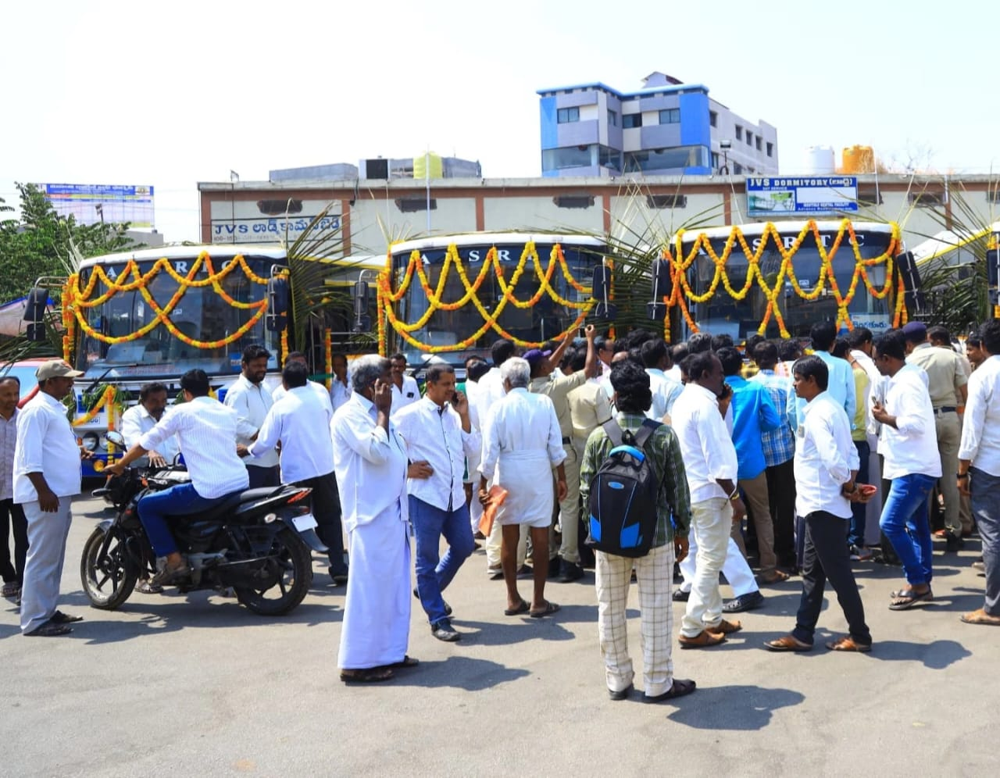

21 February
కదిరి పట్టణంలో కొత్త ఏపీఎస్ఆర్టీసీ బస్సుల ప్రారంభోత్సవం
ఆంధ్రప్రదేశ్ రాష్ట్ర రోడ్డు రవాణా సంస్థ (ఏపీఎస్ఆర్టీసీ) ఆధ్వర్యంలో కదిరి పట్టణ ఆర్టీసీ బస్టాండ్లో కొత్త బస్సుల ప్రారంభోత్సవం ఘనంగా జరిగింది. కదిరి నియోజకవర్గ శాసనసభ్యులు గౌరవనీయులు శ్రీ కందికుంట వెంకటప్రసాద్ గారు రిబ్బన్ కట్ చేసి ఈ బస్సులను ప్రారంభించారు. ఈ కార్యక్రమంలో ఏపీఎస్ఆర్టీసీ అధికారులు, సిబ్బంది, ప్రజా ప్రతినిధులు మరియు స్థానిక ప్రజలు పాల్గొని హర్షం వ్యక్తం చేశారు.
ప్రయాణికులకు మెరుగైన సేవలుప్రయాణికులకు మెరుగైన సేవలు ఈ కొత్త బస్సుల ప్రారంభంతో కదిరి పట్టణ ప్రయాణికులకు మరింత సౌకర్యవంతమైన రవాణా సదుపాయాలు అందుబాటులోకి వచ్చాయి. రాష్ట్ర ప్రభుత్వ ఆధ్వర్యంలో ప్రజలకు సురక్షితమైన, వేగవంతమైన, మెరుగైన బస్సు సర్వీసులను అందించేందుకు ప్రత్యేక చర్యలు తీసుకుంటున్నామని ఎమ్మెల్యే కందికుంట వెంకటప్రసాద్ గారు తెలియజేశారు.
అధికారుల హర్షధ్వానాలు
ఏపీఎస్ఆర్టీసీ అధికారుల మాటల్లో, ఈ కొత్త బస్సుల ద్వారా ప్రజలు మరింత సౌకర్యవంతమైన ప్రయాణాన్ని ఆస్వాదించగలరు. వీటి ద్వారా పట్టణ ప్రయాణ వ్యవస్థ మరింత మెరుగుపడుతుందని అధికారులు వెల్లడించారు.
కదిరిలో కొత్త బస్సుల ప్రారంభం స్థానిక ప్రయాణికులకు ఎంతో మేలు చేస్తుందని, రాబోయే రోజుల్లో మరిన్ని సేవలను అందుబాటులోకి తేవడానికి కృషి చేస్తామని ఎమ్మెల్యే కందికుంట వెంకటప్రసాద్ గారు తెలిపారు. ఈ కార్యక్రమాన్ని విజయవంతం చేసిన ప్రతి ఒక్కరికీ ధన్యవాదాలు తెలియజేశారు